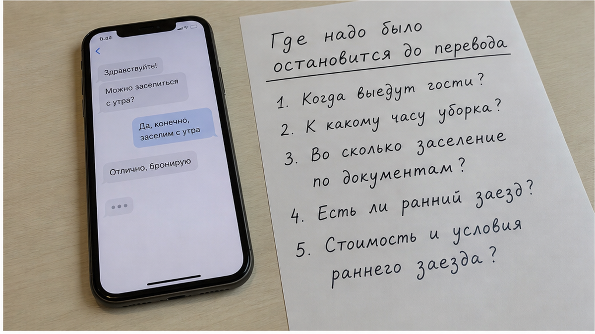
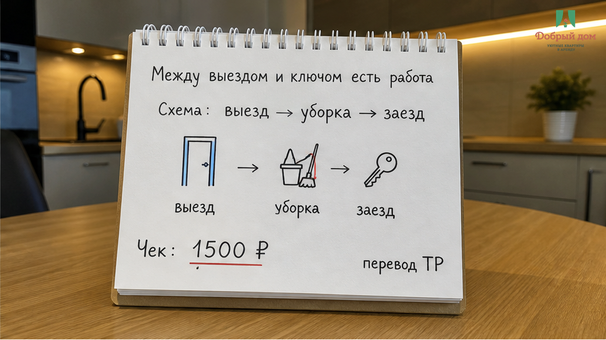
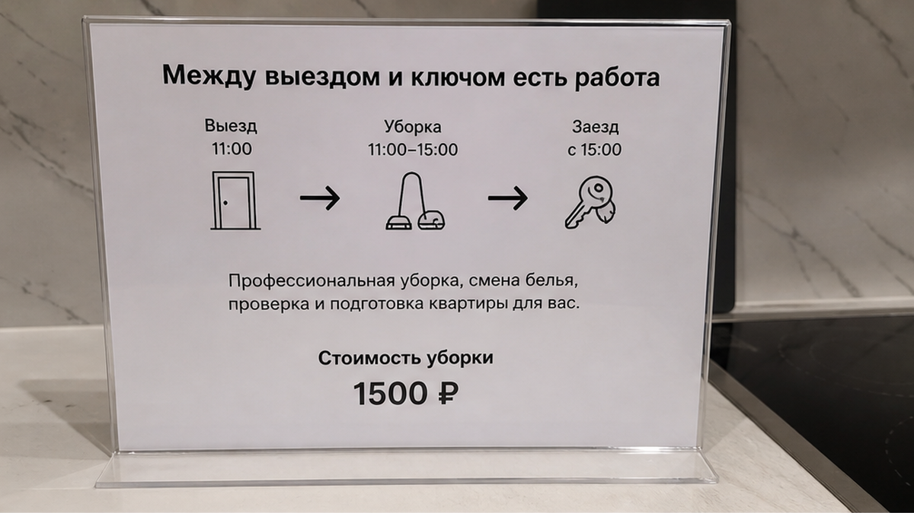
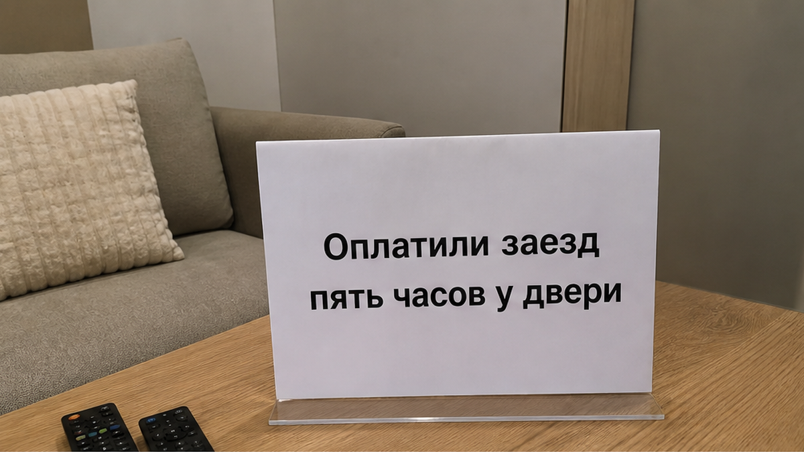
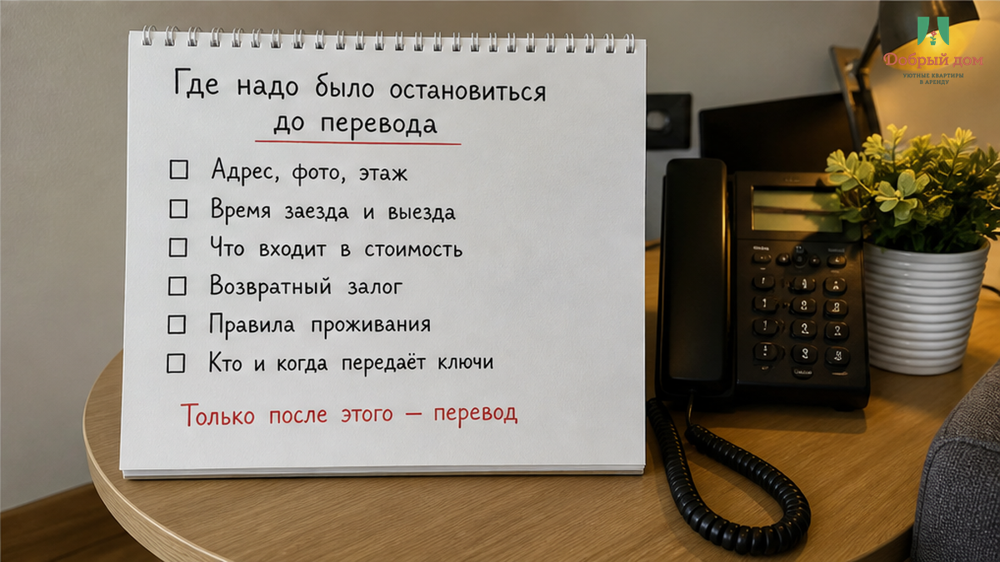
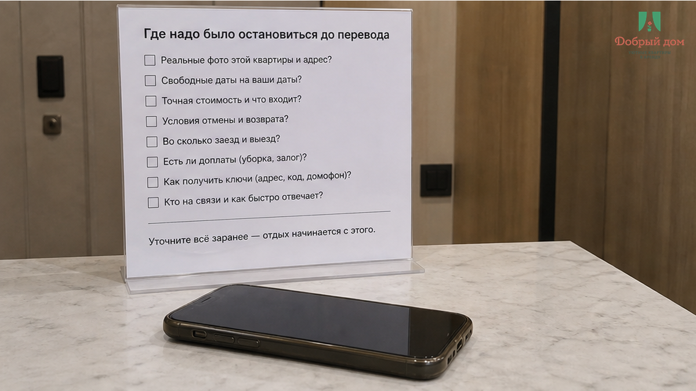
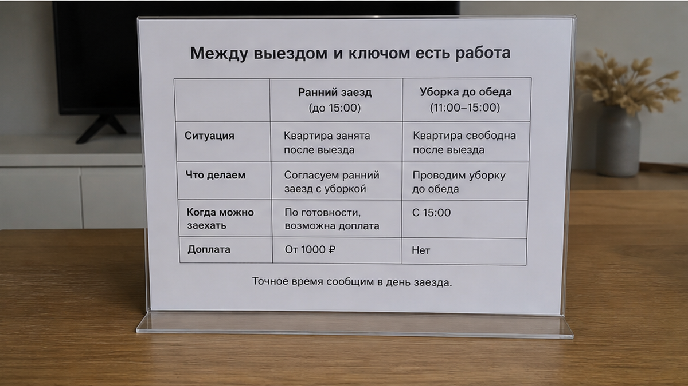

«Мы оплатили ранний заезд. Где ключ?» — это сообщение гость написал после ночного поезда, уже у подъезда, с чемоданом рядом. В ответ почти сразу пришло: «До обеда не готово, уборка». Накануне он перевёл 1 500 ₽ именно за право войти утром, забронировал две ночи и был уверен, что покупает не обещание, а готовую квартиру. В итоге почти пять часов прошли между двором, подъездом, кафе и снова двором. Ещё 890 ₽ ушло на кофе, второй кофе и такси с чемоданом туда и обратно. Деньги за ранний заезд были переведены. Ключа в руке не было.
Самое неприятное здесь даже не сумма и не задержавшаяся уборка. Сломалась простая склейка: «я оплатил ранний заезд» значит «квартира меня ждёт». Для гостя это одна фраза. Для хоста — несколько разных вещей: когда выехали предыдущие люди, успела ли зайти уборка, сменили ли бельё, свободен ли ключ и есть ли кому его отдать. Гость заплатил за первое и считал, что купил второе. Хост принял оплату, не проверив второе. А потом человеку с чемоданом объяснили, что он якобы приехал раньше, хотя он был у двери минут через десять после согласованного утреннего часа.
Я хост посуточной в Тюмени. Это «Добрый дом». Telegram · MAX.
Этот случай собирательный. Так гости пересказывают свои утра, когда пишут нам и первым делом спрашивают не цену, а другое: «Во сколько я реально смогу зайти?» Не чтобы найти виноватого. Чтобы увидеть место, где обычно рвётся нитка. Она рвётся не в объявлении со строчкой «ранний заезд возможен» и не на скриншоте перевода. Она рвётся между словами «заселим с утра» и реальным состоянием квартиры.


В посуточной квартире промежуток между выездом одних гостей и заездом следующих не пустой. В него помещаются мусор, посуда, санузел, бельё, полотенца, проверка комплекта и дорога человека, который передаёт ключ. Обычное окно между выездом около двенадцати и заездом около двух — не попытка взять доплату за воздух. Это время, когда квартира становится квартирой для следующего человека.
На студию или однушку уборке обычно нужно примерно 2–3 часа. На квартиру больше или на ситуацию с сюрпризом — 4–5. А сюрприз в посуточной не выглядит как катастрофа: прошлые гости задержались, что-то пролили на диван, потекла техника, бельё не успело высохнуть. В объявлении этого не видно. Это становится видно только тогда, когда вы уже стоите у двери.
Поэтому ранний заезд — не кнопка, которую можно добавить к брони. Это запрос, который надо подтвердить. Если квартира прошлую ночь стояла пустой, утро может быть свободным. Если из неё в этот же день только выехали, есть три варианта: ждать, торопить уборку или заходить в неподготовленное жильё. Последнее особенно обидно: дверь открыли, а внутри чужая посуда, прежнее бельё и ощущение, что вас просто впустили переждать.
В этой истории случился первый вариант. Почти пять часов ожидания после ночной дороги. Не прогулка по городу по своему желанию, а время, которое человек уже оплатил другим смыслом.



Точка, в которой всё ещё можно было развернуть, была не у подъезда. Она находилась накануне, в чате, между фразой «заселим с утра» и переводом 1 500 ₽.
Во сколько квартира свободна после предыдущих гостей и что именно входит в «ранний заезд» — уборка, бельё, ключ?
Вопрос неудобный, поэтому полезный. На него нельзя честно ответить одним «да, конечно». Либо вам скажут конкретно: предыдущие гости выезжают утром, уборка закончится к определённому часу, раньше не получится. Либо начнут говорить «постараемся», «должно быть нормально», «уборка до обеда». И это тоже ответ: окно не подтверждено, квартира занята, а деньги не превращают её в свободную.
У нас правило звучит жёстко, но оно бережёт обе стороны: не берём доплату за ранний заезд, пока не подтверждено, что квартира будет убрана, бельё сменено, а ключ окажется свободен к названному часу. Потерять полторы тысячи неприятно. Поставить человека с чемоданом в подъезд на пять часов и потом доказывать формальную правоту — хуже.
Та же ловушка встречается не только с ранним заездом. Вот история про 3 000 ₽ предоплаты и тишину в чате к вечеру: деньги ушли раньше ответа на главный вопрос. А вот история про доплату за третьего у двери, когда условия внезапно меняются на пороге, где человеку труднее всего спорить.
Ожидание с вещами — вообще знакомая посуточная поза. Иногда причина в домофоне: код прислали, а дверь молчит двадцать минут. Иногда проблема возникает на другом конце поездки: выезд в двенадцать, поезд позже и чемоданы между ними. Поводы разные, картина одна: закрытая дверь, вещи, часы.
И не надо путать хранение багажа с ранним заездом. Оставить чемодан и погулять — нормальный выход, если нужно переждать пару часов. Но если человек заплатил за возможность после поезда зайти, умыться и лечь спать, камера хранения не заменяет эту услугу.
А для вас ранний заезд — это строчка в объявлении или ключ в руке в согласованный час? Напишите, что вам отвечали на вопрос об уборке до оплаты, в Telegram или MAX. Такие переписки иногда говорят о брони больше, чем красивые фотографии квартиры.


Люди ищут «квартиры посуточно тюмень» или хотят снять квартиру посуточно в тюмени, а ранний заезд воспринимают как опцию вроде парковки. Но это не опция. Это состояние конкретной квартиры в конкретный час. Оно зависит от чужого выезда, уборки, белья и ключа — от вещей, которых гость заранее не видит.
Сначала проверка, потом перевод. Не наоборот. Проверка — это не вопрос «вы точно заселите?». Это конкретные ответы, которые должны остаться в чате текстом, а не раствориться в телефонном «договорились».
1 500 ₽ за ранний заезд и 890 ₽ на ожидание в этой истории — не тюменский прайс, а цена одного конкретного утра. Где-то ранний заезд бесплатный, потому что квартира была свободна. Где-то стоит как сутки, потому что ночь снимают с продажи. Сравнивать надо не цифру, а то, что за неё подтверждено: готовая квартира и ключ в согласованный час или только надежда, что уборка успеет.
«Добрый дом» — посуточные квартиры в Тюмени.
Telegram: https://t.me/Dobriy_dom_72
MAX: https://max.ru/id660300569233_biz
Бронирование: https://добрыйдом-72.рф/booking/
Сайт: https://добрыйдом-72.рф/
Телефон: +7 (993) 574-83-22
Менеджер: https://t.me/Dobriy_dom_Tyumen